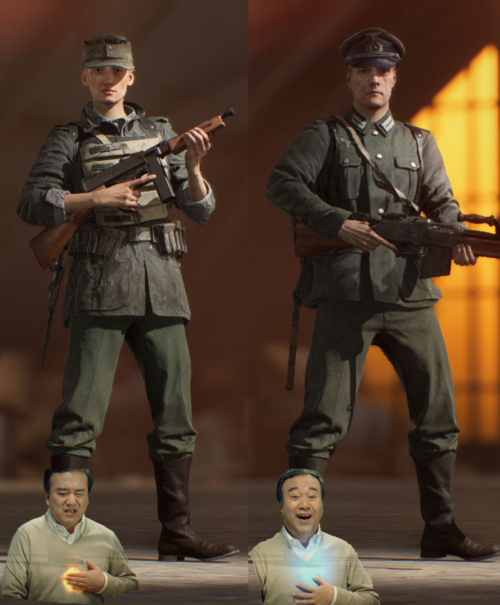

기열찐빠같은 여캐를 없애고 고증에 맞는 복장을 통일함 ㄷㄷ

기열찐빠같은 여캐를 없애고 고증에 맞는 복장을 통일함 ㄷㄷ
6도 계집 존나 나온다.. 오 스킨 멋있는데? 싶으면 계집할당제 되어있음
언에듀케이티드하네요
넥서스모드발동 젖보똥스킨적용
전장의 아이도르~!
??: 거봐 다 해준다니까
배필이 밀스퍼거 개꼬임 걍 장비 나오는 서든인데 ㄹㅇㅋㅋ
로커랑 메트로에서 뇌녹파티하는 재미가 있었는데
히히 유탄 RPG 폭발물 빵야빵야
하드코어 메트로 폭발물 금지 서버만 존나 돌렸었는데 ㅋㅋㅋ
PC적인 마인드를 가지지 못한 언에듀케이티드한 개붕이!!
넥서스모드에서 언에듀케이티드하다고 내려버릴듯 ㅋㅋㅋ
여캐였음?
소년병인줄 알았네
스킨만 갈아끼워봐야 인게임 산부인과마냥 100미터 밖에서도 사방에서 들리는 꺅꺆 고주파 비명소리는 그대로잔
1 처럼 뽕차게라도 만들었어야지